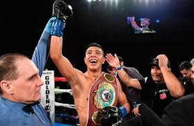

| VENDRAN PELEAS A PUERTA CERRADA |
|
EL VAQUERO NAVARRETE DEFENDERA SU TITULO
El campeón mundial de peso supergallo, Emanuel Navarrete, intensificó su preparación ante la posibilidad de volver al ring en junio próximo y descartó que el hecho de combatir sin público en las gradas sea algo negativo para él, de hecho, opta por verlo como una oportunidad de oro en medio de la pandemia Navarrete es uno de los peleadores que han sido llamados por Zanfer para reactivar el boxeo desde los estudios de TV Azteca en la Ciudad de México. El proyecto, que pretendía iniciar el 6 de junio, espera aún aprobación por parte de las autoridades deportivas y sanitarias luego del anuncio que el deporte a puertas cerradas no se daría hasta el 15 de junio.. |
 |
|
A JAIME MUNGUIA NO LE GUSTARIA PELEAR A PUERTA CERRADA
El ex campeón mundial Superwelter, Jaime Munguía, ofreció este viernes una videoconferencia desde su hogar, en esta localidad, para hablar acerca de su futuro, y cómo le ha afectado la situación difícil que atraviesa el mundo por el COVID-19. El joven tijuanense conserva una marca de 35-0-0, con 28 nocauts, y es actualmente una de las cartas fuertes que presenta Promociones Zanfer. Sin embargo, esta inactividad lo mantiene un poco consternado como a otros de sus colegas boxeadores. Mencionó que entrena a diario a puerta cerrada en el gimnasio de la Zona Norte del Centro de Tijuana, con tan sólo dos entrenadores, y aunque no tiene fecha ni rival para su reaparición, ya que debe esperar la luz verde da las autoridades para reanudar los eventos públicos. |
|
|
CANELO ALVAREZ PELEARA A PUERTA CERRADA
Saúl ‘Canelo’ Álvarez volvería al ring el próximo 4 de julio y lo haría a puerta cerrada en Las Vegas luego del éxito y la experiencia que representó la función de UFC 249. De acuerdo a diarios británicos, la empresa DAZN, el mexicano y su promotor ya estarían en pláticas sobre la organización. "Si es algo que Canelo aprobaría y está dispuesto a hacerlo, y podemos hacer que funcione para todos los involucrados, lo haremos. Lo que importa es si Canelo está de acuerdo con él y está dispuesto a hacerlo, y luego iremos desde allí. Estaremos listos para entrar en acción tan pronto como se levanten las restricciones, tan pronto como haya algún tipo de camino para hacer shows nuevamente", señaló Eric Gómez presidente de Golden Boy Promotions. El rival contemplado para medirse al mexicano seguiría siendo Billy Joe Saunders, un combate que prácticamente estaría apalabrado desde el mes de mayo y que lamentablemente debió posponerse debido a la pandemia de coronavirus. |
|